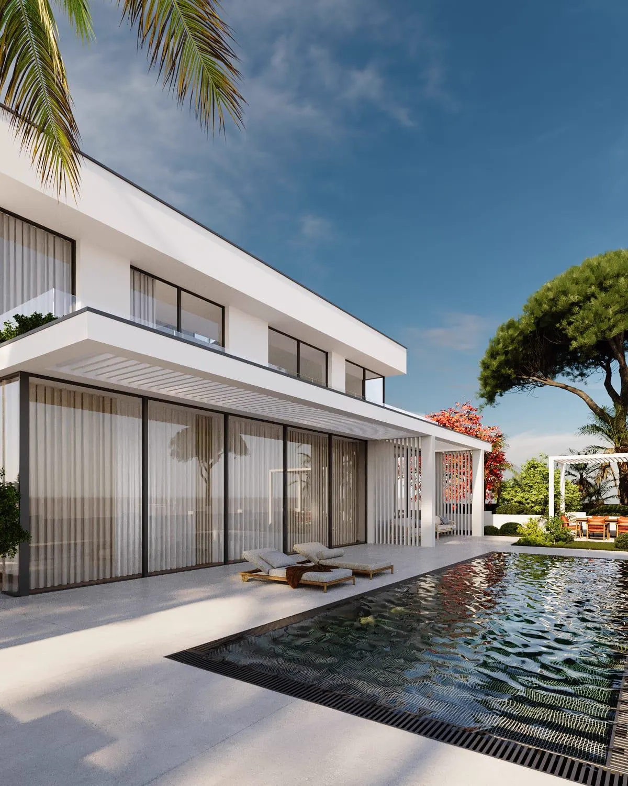
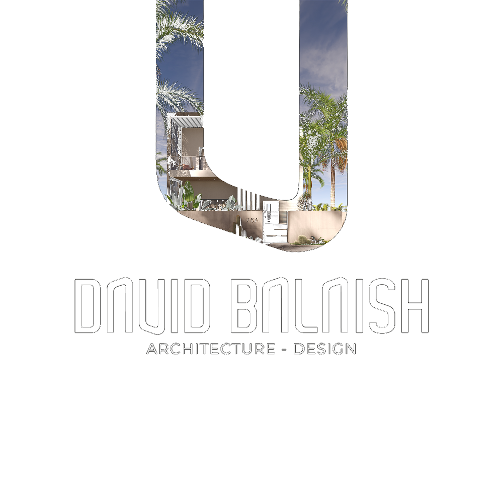
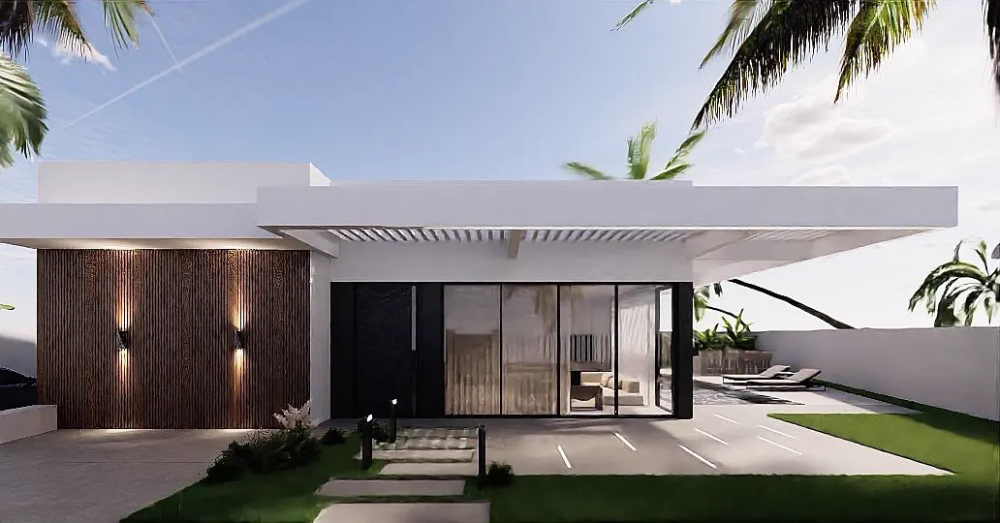
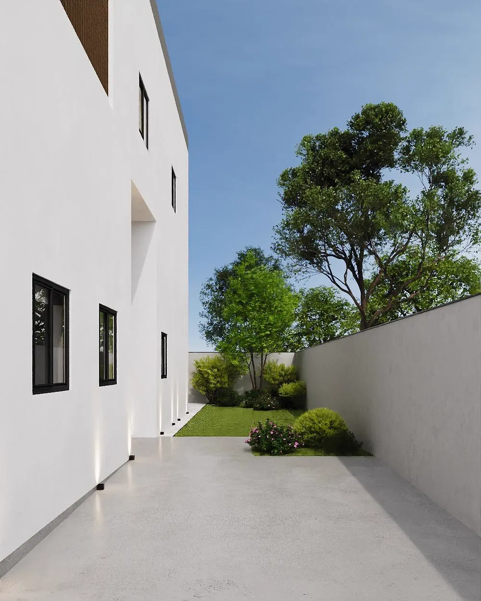
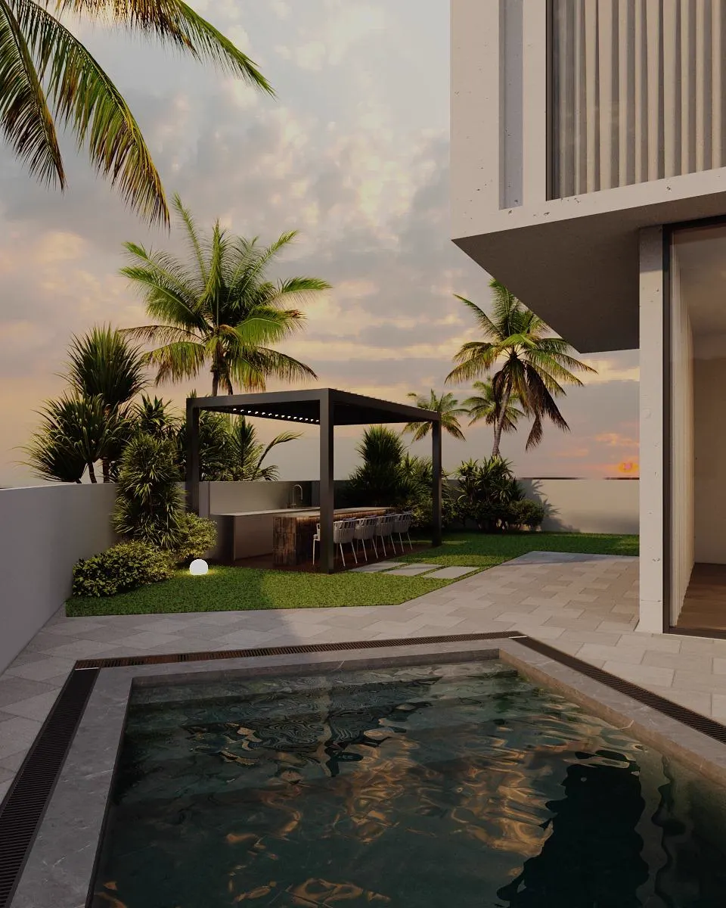

David Balaish Architecture
מתכננים נכון. פותרים מורכב.
הופכים חזון למציאות.
תכנון אדריכלי, היתרי בנייה ומעטפת מקצועית מלאה, משלב הבדיקה הראשונית ועד להשלמת הפרויקט.

אודות המשרד
גורם אחד שמוביל את כל התהליך, מהרעיון ועד ההיתר
משרד David Balaish Architecture מלווה משפחות, בעלי נכסים ובעלי עסקים בכל רחבי הארץ, משלב בדיקת ההיתכנות הראשונית ועד לקבלת ההיתר והשלמת התכנון. המשרד משמש כגורם מתכלל אחד, ומרכז את כל בעלי המקצוע והיועצים הנדרשים לפרויקט.
הגישה משלבת ראייה תכנונית, הבנה רגולטורית מעמיקה וניסיון מוכח מול ועדות ורשויות, כדי להפוך תהליך שנתפס כמורכב לתהליך ברור, מלווה ושקוף.
תחומי התמחות
מעטפת תכנון מלאה, בכל תחום שנוגע לנכס שלכם
שישה תחומי ליבה, שכל אחד מהם נבנה כפרויקט בפני עצמו, מהבנת הצורך ועד לקבלת האישור הסופי.

בתים פרטיים
מהחלום המשפחתי ועד לתכנית עבודה מלאה ומאושרת.

עיצוב ותכנון פנים
תכנון חללים שמתאים לשגרת החיים האמיתית שלכם.

היתרי בנייה והסדרת חריגות
מהמצב הקיים בשטח לתכנון חוקי, מסודר ומאושר.

בריכות שחייה
מהרעיון בחצר לבריכה מתוכננת, בטוחה ומאושרת.

רישוי עסקים
מתכננים את העסק כך שיעמוד בדרישות ויפעל בראש שקט.

משקים ונחלות
עושים סדר במצב הבנייה במשק ובונים תכנית פעולה ברורה.
מעטפת 360°
כתובת אחת שמרכזת עבורכם את כל התהליך
המשרד מרכז ומנהל את כלל בעלי המקצוע והיועצים הנדרשים לפרויקט, כך שאתם לא צריכים לנהל בעצמכם אף גורם.
איך מתחילים?
תהליך ברור, בשישה צעדים
שיחת היכרות והבנת הצורך
מבינים מה המצב הקיים, מהו החזון ומהם האילוצים.
בדיקת הנכס והמסמכים
איסוף היתרים, תכניות ותב"ע רלוונטיים.
בדיקת היתכנות תכנונית
מיפוי מה ניתן וכדאי לבצע, לפני כל התחייבות.
תכנית פעולה והצעת מחיר
לוחות זמנים, שלבים ועלויות בצורה שקופה.
תכנון, תיאום יועצים והגשה
פיתוח החלופה, עבודה מול היועצים והגשת הבקשה.
ליווי עד להשלמת התהליך
מלווים אתכם עד לקבלת האישורים ותחילת הביצוע.
פרויקטים נבחרים
פרויקטים אחרונים
סיפורי הצלחה
לא המלצה כללית: סיפור מלא, מהאתגר ועד לתוצאה
שאלות נפוצות
מה שלרוב שואלים אותנו
משך הזמן משתנה בהתאם לסוג הבקשה, מורכבות הנכס והרשות הרלוונטית, ונקבע בבירור כבר בשלב תכנית הפעולה.
נסמן לכם מראש רשימה מדויקת בהתאם לסוג הפרויקט, לרוב נסח טאבו, היתרים קיימים ותכניות, אם יש.
כן, בדיקת היתכנות תכנונית היא שלב קבוע בתהליך, עוד לפני כל התחייבות מצדכם.
המשרד מתכלל את כל בעלי המקצוע, מודד, מהנדס ויועצים נוספים, כך שאתם לא נדרשים לנהל זאת בעצמכם.
המשרד עובד מול ועדות תכנון ורשויות מקומיות בכל רחבי הארץ.
כן, בחינת המצב הקיים והתאמתו להוראות התב"ע וההיתר היא חלק מרכזי מהעבודה, בכפוף לנסיבות המקרה ולהחלטות הרשויות.
אדריכל טוב הוא כזה שמלווה אתכם כגורם אחד מהרעיון הראשוני ועד לקבלת ההיתר, כולל בדיקת היתכנות מקדימה, ניסיון מוכח מול ועדות ורשויות, ותיק עבודות שמראה פרויקטים דומים לשלכם. David Balaish Architecture פעיל בכל רחבי הארץ ומרכז עבורכם את כל היועצים הנדרשים.
אדריכל אחראי על התכנון הכולל, עיצוב, פונקציונליות, זכויות בנייה והליך ההיתר מול הרשויות. מהנדס קונסטרוקציה אחראי על התכן ההנדסי-מבני. משרד אדריכלים מסודר, כמו David Balaish Architecture, מתכלל את שני התחומים ומרכז עבורכם את כלל היועצים הנדרשים תחת גורם אחד.
יצירת קשר
מתכננים לבנות, להרחיב או להסדיר?
בואו נתחיל בבדיקת הנכס והצרכים.
מלאו את הפרטים ונחזור אליכם בהקדם לתיאום שיחת היכרות ראשונית, ללא התחייבות.